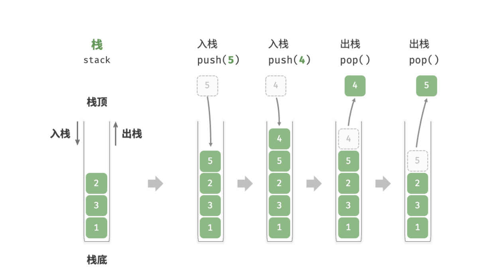
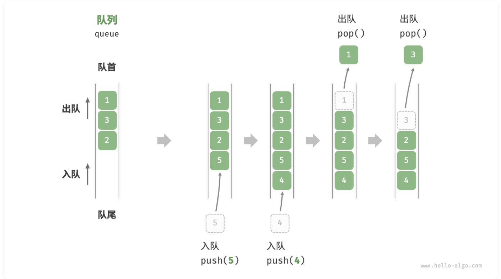

栈和队列
栈如同叠猫猫，而队列就像猫猫排队。
两者分别代表先入后出和先入先出的逻辑关系。
所有依赖代码位于 StackAndQueue\src 目录下。
Baseline 任务 1: 栈的基本实现
栈（stack）是一种遵循先入后出逻辑的线性数据结构。
我们可以将栈类比为桌面上的一摞盘子，规定每次只能移动一个盘子，那么想取出底部的盘子，则需要先将上面的盘子依次移走。我们将盘子替换为各种类型的元素（如整数、字符、对象等），就得到了栈这种数据结构。
如图所示，我们把堆叠元素的顶部称为“栈顶”，底部称为“栈底”。将把元素添加到栈顶的操作叫作“入栈”，删除栈顶元素的操作叫作“出栈”。

栈的基本操作
栈的常用操作如表所示，具体的方法名需要根据所使用的编程语言来确定。在此，我们以常见的 push()、pop()、top() 命名为例（即 C++ 中<stack>库中栈的对应方法）。
| 方法 | 描述 | 时间复杂度 |
|---|---|---|
push() | 元素入栈（添加至栈顶） | $O(1)$ |
pop() | 栈顶元素出栈 | $O(1)$ |
top() | 访问栈顶元素 | $O(1)$ |
没错，在 C++ 语言中，栈的数据结构已经被封装在 <stack> 库中，我们可以直接使用它来创建和操作栈。以下是一个简单的示例：
/* 初始化栈 */
stack<int> stack;
/* 元素入栈 */
stack.push(1);
stack.push(3);
stack.push(2);
stack.push(5);
stack.push(4);
/* 访问栈顶元素 */
int top = stack.top();
/* 元素出栈 */
stack.pop(); // 无返回值
/* 获取栈的长度 */
int size = stack.size();
/* 判断是否为空 */
bool empty = stack.empty();注：上述代码需要包含头文件 #include <stack>
当然，实际上<stack>库中的栈包含的函数远超过上述三种基本操作，大家可以参考 C++ 官方文档来了解更多细节：https://en.cppreference.com/w/cpp/container/stack 。
栈的实现
为了深入了解栈的运行机制，我们来尝试自己实现一个栈类。
栈遵循先入后出的原则，因此我们只能在栈顶添加或删除元素。然而，数组和链表都可以在任意位置添加和删除元素，因此栈可以视为一种受限制的数组或链表。换句话说，我们可以“屏蔽”数组或链表的部分无关操作，使其对外表现的逻辑符合栈的特性。
1.基于链表的栈实现
使用链表实现栈时，我们可以将链表的头节点视为栈顶，尾节点视为栈底。
如图所示，对于入栈操作，我们只需将元素插入链表头部，这种节点插入方法被称为“头插法”。而对于出栈操作，只需将头节点从链表中删除即可。
以下是基于链表实现栈的示例代码：
/* 基于链表实现的栈 */
class LinkedListStack {
private:
ListNode *stackTop; // 将头节点作为栈顶
int stkSize; // 栈的长度
public:
LinkedListStack() {
stackTop = nullptr;
stkSize = 0;
}
~LinkedListStack() {
// 遍历链表删除节点，释放内存
freeMemoryLinkedList(stackTop);
}
/* 获取栈的长度 */
int size() {
return stkSize;
}
/* 判断栈是否为空 */
bool isEmpty() {
return size() == 0;
}
/* 入栈 */
void push(int num) {
ListNode *node = new ListNode(num);
node->next = stackTop;
stackTop = node;
stkSize++;
}
/* 出栈 */
int pop() {
int num = top();
ListNode *tmp = stackTop;
stackTop = stackTop->next;
// 释放内存
delete tmp;
stkSize--;
return num;
}
/* 访问栈顶元素 */
int top() {
if (isEmpty())
throw out_of_range("栈为空");
return stackTop->val;
}
};注：上述代码中的 ListNode 是链表节点的定义。
2.基于数组的栈实现
使用数组实现栈时，我们可以将数组的尾部作为栈顶。如图所示，入栈与出栈操作分别对应在数组尾部添加元素与删除元素，时间复杂度都为 $O(1)$。
/* 基于数组实现的栈 */
class ArrayStack {
private:
vector<int> stack;
public:
/* 获取栈的长度 */
int size() {
return stack.size();
}
/* 判断栈是否为空 */
bool isEmpty() {
return stack.size() == 0;
}
/* 入栈 */
void push(int num) {
stack.push_back(num);
}
/* 出栈 */
int pop() {
int num = top();
stack.pop_back();
return num;
}
/* 访问栈顶元素 */
int top() {
if (isEmpty())
throw out_of_range("栈为空");
return stack.back();
}
/* 返回 Vector */
vector<int> toVector() {
return stack;
}
};注：上述代码中的 vector 是 C++ 标准库中的动态数组。
任务内容
- 完成链表实现的栈类和数组实现的栈类，要求可以通过给出的测试程序（你在这一部分不可以修改测试程序）。
- 评估两种实现的性能差异，分析它们在不同场景下的优缺点，你需要使用完整的测试程序来评估性能差异，并在报告中进行分析。
- 参考 C++ 标准库中的
<stack>实现，在之前实现的栈类上添加更多的功能，如获取栈的长度、判断栈是否为空等（五个更多的功能即可），并比较你的栈和<stack>库中栈的性能差异（需要查阅<stack>库的相关资料）。
你提交的材料中这部分内容需要包含：
- 三个小任务分别的代码（注意：代码的文件结构和注释也是评分的一部分）
- 对你程序和结果的分析（注：分析需要能够体现你对这些功能的理解，不能仅仅是简单的结果描述）
- 你对性能差异的分析（注：分析需要能够体现你对两种实现的理解，不能仅仅是简单的结果描述）
点击展开：Baseline 任务 1 输入输出格式与样例
注：以下测试样例仅用于说明输入输出格式，不代表完整测试覆盖范围，也不是唯一评测数据。学生需要根据该格式自行设计并生成更多测试样例，用于覆盖边界情况和自定义扩展功能。本任务包含性能差异比较要求，自行生成的测试样例或测试程序输出必须包含可量化的性能统计数据，例如数据规模、操作次数、运行时间（如 time_ms）等。
输入格式
| 行号 | 内容 | 说明 |
|---|---|---|
| 第 1 行 | capacity n | 数组栈容量和初始元素个数；链式栈可忽略 capacity，但仍需读取该值 |
| 第 2 行 | a1 a2 ... an | 从栈底到栈顶的初始元素；n = 0 时为空行 |
| 第 3 行 | m | 操作次数 |
接下来 m 行 | op args... | 每行一个操作 |
| 操作 | 含义 |
|---|---|
PUSH x | 将 x 压入栈顶 |
POP | 弹出并输出栈顶元素 |
TOP | 输出栈顶元素但不弹出 |
SIZE | 输出当前栈内元素个数 |
EMPTY | 输出栈是否为空 |
PRINT | 按从栈顶到栈底的顺序输出当前栈 |
输出格式
| 项目 | 规定 |
|---|---|
| 产生输出的操作 | POP、TOP、SIZE、EMPTY、PRINT |
| 空栈访问 | POP 或 TOP 输出 ERROR |
| 布尔值 | EMPTY 输出 true 或 false |
| 打印栈 | 按栈顶到栈底输出，空栈输出 EMPTY |
| 性能统计 | 本任务包含性能差异比较要求，必须在功能输出后追加 PERF name n=<数据规模> ops=<操作次数> time_ms=<运行时间> |
输入样例：
8 3
1 2 3
9
TOP
PUSH 4
PUSH 5
POP
TOP
SIZE
EMPTY
PRINT
POP输出样例：
3
5
4
4
false
4 3 2 1
4
PERF array_stack n=100000 ops=200000 time_ms=9.84
PERF linked_stack n=100000 ops=200000 time_ms=21.36
PERF std_stack n=100000 ops=200000 time_ms=8.91Baseline 任务 2: 队列的基本实现
队列（queue）是一种遵循先入先出规则的线性数据结构。顾名思义，队列模拟了排队现象，即新来的人不断加入队列尾部，而位于队列头部的人逐个离开。
如图所示，我们将队列头部称为“队首”，尾部称为“队尾”，将把元素加入队尾的操作称为“入队”，删除队首元素的操作称为“出队”。

队列的基本操作
队列的常见操作如表所示（以 C++ 中 <queue> 库的对应方法为例）：
| 方法 | 描述 | 时间复杂度 |
|---|---|---|
push() | 元素入队（添加至队尾） | $O(1)$ |
pop() | 队首元素出队 | $O(1)$ |
front() | 访问队首元素 | $O(1)$ |
我们可以直接使用 C++ 中现成的队列类：
/* 初始化队列 */
queue<int> queue;
/* 元素入队 */
queue.push(1);
queue.push(3);
queue.push(2);
queue.push(5);
queue.push(4);
/* 访问队首元素 */
int front = queue.front();
/* 元素出队 */
queue.pop();
/* 获取队列的长度 */
int size = queue.size();
/* 判断队列是否为空 */
bool empty = queue.empty();注：上述代码需要包含头文件 #include <queue>
队列的实现
为了实现队列，我们需要一种数据结构，可以在一端添加元素，并在另一端删除元素，链表和数组都符合要求。
1.基于链表的实现
如下图所示，我们可以将链表的“头节点”和“尾节点”分别视为“队首”和“队尾”，规定队尾仅可添加节点，队首仅可删除节点。
/* 基于链表实现的队列 */
class LinkedListQueue {
private:
ListNode *front, *rear; // 头节点 front ，尾节点 rear
int queSize;
public:
LinkedListQueue() {
front = nullptr;
rear = nullptr;
queSize = 0;
}
~LinkedListQueue() {
// 遍历链表删除节点，释放内存
freeMemoryLinkedList(front);
}
/* 获取队列的长度 */
int size() {
return queSize;
}
/* 判断队列是否为空 */
bool isEmpty() {
return queSize == 0;
}
/* 入队 */
void push(int num) {
// 在尾节点后添加 num
ListNode *node = new ListNode(num);
// 如果队列为空，则令头、尾节点都指向该节点
if (front == nullptr) {
front = node;
rear = node;
}
// 如果队列不为空，则将该节点添加到尾节点后
else {
rear->next = node;
rear = node;
}
queSize++;
}
/* 出队 */
int pop() {
int num = peek();
// 删除头节点
ListNode *tmp = front;
front = front->next;
// 释放内存
delete tmp;
queSize--;
return num;
}
/* 访问队首元素 */
int peek() {
if (size() == 0)
throw out_of_range("队列为空");
return front->val;
}
/* 将链表转化为 Vector 并返回 */
vector<int> toVector() {
ListNode *node = front;
vector<int> res(size());
for (int i = 0; i < res.size(); i++) {
res[i] = node->val;
node = node->next;
}
return res;
}
};注：上述代码中的 ListNode 是链表节点的定义。
2.基于数组的实现
在数组中删除首元素的时间复杂度为 $O(n)$ ，这会导致出队操作效率较低。然而，我们可以采用以下巧妙方法来避免这个问题。
我们可以使用一个变量 front 指向队首元素的索引，并维护一个变量 size 用于记录队列长度。定义 rear = front + size ，这个公式计算出的 rear 指向队尾元素之后的下一个位置。
基于此设计，数组中包含元素的有效区间为 [front, rear - 1]，各种操作的实现方法如下图所示。
- 入队操作：将输入元素赋值给
rear索引处，并将size增加 1 。 - 出队操作：只需将
front增加 1 ，并将size减少 1 。
可以看到，入队和出队操作都只需进行一次操作，时间复杂度均为 $O(1)$ 。
你可能会发现一个问题：在不断进行入队和出队的过程中，front 和 rear 都在向右移动，当它们到达数组尾部时就无法继续移动了。
任务内容
- 完成链表实现的队列类和数组实现的队列类，要求可以通过给出的测试程序（你在这一部分不可以修改测试程序）。
- 我们在基于数组的实现中提到，当
front和rear到达数组尾部时就无法继续移动了。请你设计至少两种方法来解决这个问题，在代码中实现它并测试。 - 评估两种实现的性能差异，分析它们在不同场景下的优缺点，你需要使用完整的测试程序来评估性能差异，并在报告中进行分析。
- 参考 C++ 标准库中的
<queue>实现，在之前实现的队列类上添加更多的功能，如获取队列的长度、判断队列是否为空等（五个更多的功能即可），并比较你的队列和<queue>库中队列的性能差异（需要查阅<queue>库的相关资料）。
你提交的材料中这部分内容需要包含：
- 四个小任务分别的代码（注意：代码的文件结构和注释也是评分的一部分）
- 对于基于数组的实现中设计的至少两种解决
front和rear到达数组尾部问题解决方案思路的详细说明。 - 对你程序和结果的分析（注：分析需要能够体现你对这些功能的理解，不能仅仅是简单的结果描述）
- 你对性能差异的分析（注：分析需要能够体现你对两种实现的理解，不能仅仅是简单的结果描述）
点击展开：Baseline 任务 2 输入输出格式与样例
注：以下测试样例仅用于说明输入输出格式，不代表完整测试覆盖范围，也不是唯一评测数据。学生需要根据该格式自行设计并生成更多测试样例，用于覆盖边界情况和自定义扩展功能。本任务包含性能差异比较要求，自行生成的测试样例或测试程序输出必须包含可量化的性能统计数据，例如数据规模、操作次数、运行时间（如 time_ms）等。
输入格式
| 行号 | 内容 | 说明 |
|---|---|---|
| 第 1 行 | capacity n | 数组队列容量和初始元素个数；链式队列可忽略 capacity，但仍需读取该值 |
| 第 2 行 | a1 a2 ... an | 从队首到队尾的初始元素；n = 0 时为空行 |
| 第 3 行 | m | 操作次数 |
接下来 m 行 | op args... | 每行一个操作 |
| 操作 | 含义 |
|---|---|
PUSH x | 将 x 加入队尾 |
POP | 删除并输出队首元素 |
FRONT | 输出队首元素但不出队 |
SIZE | 输出当前队列元素个数 |
EMPTY | 输出队列是否为空 |
PRINT | 按从队首到队尾的顺序输出当前队列 |
输出格式
| 项目 | 规定 |
|---|---|
| 产生输出的操作 | POP、FRONT、SIZE、EMPTY、PRINT |
| 空队列访问 | POP 或 FRONT 输出 ERROR |
| 布尔值 | EMPTY 输出 true 或 false |
| 打印队列 | 按队首到队尾输出，空队列输出 EMPTY |
| 性能统计 | 本任务包含性能差异比较要求，必须在功能输出后追加 PERF name n=<数据规模> ops=<操作次数> time_ms=<运行时间> |
输入样例：
6 3
1 2 3
10
FRONT
PUSH 4
PUSH 5
POP
PUSH 6
POP
FRONT
SIZE
EMPTY
PRINT输出样例：
1
1
2
3
4
false
3 4 5 6
PERF circular_queue n=100000 ops=200000 time_ms=10.27
PERF linked_queue n=100000 ops=200000 time_ms=24.58
PERF std_queue n=100000 ops=200000 time_ms=9.73Baseline 任务 3: 栈和队列的综合应用
事实上，我们发现栈和队列其实很像，一个是先入后出（LIFO），一个是先入先出（FIFO）。本质上，二者只是对数据的存取顺序进行了限制，而底层的数据结构可以是相同的。
接下来，我们希望你可以思考，有没有什么方式可以使这二者之间相互转换呢？也就是说，我们是否可以使用队列来实现一个栈，或者使用栈来实现一个队列呢？
任务内容
- 设计并实现一个类，使用队列来实现一个栈，要求该类支持栈的基本操作（入栈、出栈、访问栈顶元素等）。你需要编写测试程序来验证你的实现。
- 设计并实现一个类，使用栈来实现一个队列，要求该类支持队列的基本操作（入队、出队、访问队首元素等）。你需要编写测试程序来验证你的实现。
- 使用
<vector>库来实现上述两个类，其中各自需要一个函数可以使其可以相互转换（即栈类中需要一个函数可以将其转换为队列类，队列类中需要一个函数可以将其转换为栈类）。你需要编写测试程序来验证这些函数的正确性。 - 评估对比栈实现队列和
<vector>实现队列的差异，你需要使用完整的测试程序来体现差异，并在报告中进行分析。 - 评估对比队列实现栈和
<vector>实现栈的差异，你需要使用完整的测试程序来体现差异，并在报告中进行分析。
你提交的材料中这部分内容需要包含：
- 你的所有代码（注意：代码的文件结构和注释也是评分的一部分）
- 对你前两个小任务实现原理的解释
- 对你程序和测试结果的分析
点击展开：Baseline 任务 3 输入输出格式与样例
注：以下测试样例仅用于说明输入输出格式，不代表完整测试覆盖范围，也不是唯一评测数据。学生需要根据该格式自行设计并生成更多测试样例，用于覆盖边界情况和自定义扩展功能。本任务包含性能差异比较要求，自行生成的测试样例或测试程序输出必须包含可量化的性能统计数据，例如数据规模、操作次数、运行时间（如 time_ms）等。
输入格式
| 位置 | 内容 | 说明 |
|---|---|---|
| 第 1 行 | T | 测试场景数量 |
| 每个场景第 1 行 | STACK_BY_QUEUE / QUEUE_BY_STACK / CONVERT | 场景类型 |
| 场景类型 | 后续输入格式 | 含义 |
|---|---|---|
STACK_BY_QUEUE | n；下一行从栈底到栈顶输入 n 个元素；再输入 m 行栈操作 | 使用队列实现栈 |
QUEUE_BY_STACK | n；下一行从队首到队尾输入 n 个元素；再输入 m 行队列操作 | 使用栈实现队列 |
CONVERT | n；下一行输入从前到后的原始序列；再输入 STACK_TO_QUEUE 或 QUEUE_TO_STACK | 测试栈与队列之间的转换 |
| 场景 | 可用操作 |
|---|---|
STACK_BY_QUEUE | PUSH x、POP、TOP、PRINT |
QUEUE_BY_STACK | PUSH x、POP、FRONT、PRINT |
输出格式
| 场景 | 输出规则 |
|---|---|
| 所有场景 | 先输出 CASE t，其中 t 从 1 开始 |
STACK_BY_QUEUE | POP、TOP、PRINT 输出结果；空结构访问输出 ERROR |
QUEUE_BY_STACK | POP、FRONT、PRINT 输出结果；空结构访问输出 ERROR |
CONVERT | 输出转换后的结构内容 |
| 空结构打印 | 输出 EMPTY |
| 性能统计 | 本任务包含性能差异比较要求，必须在功能输出后追加 PERF name n=<数据规模> ops=<操作次数> time_ms=<运行时间> |
输入样例：
3
STACK_BY_QUEUE
3
1 2 3
4
TOP
PUSH 4
POP
PRINT
QUEUE_BY_STACK
3
1 2 3
4
FRONT
PUSH 4
POP
PRINT
CONVERT
4
5 6 7 8
QUEUE_TO_STACK输出样例：
CASE 1
3
4
3 2 1
CASE 2
1
1
2 3 4
CASE 3
8 7 6 5
PERF stack_by_queue n=100000 ops=200000 time_ms=38.12
PERF queue_by_stack n=100000 ops=200000 time_ms=17.45
PERF vector_based n=100000 ops=200000 time_ms=11.06